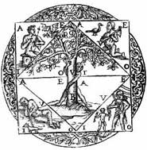

|
|
DIE
MAGIE nach GIORDANO BRUNO
Der Hermetismus im Dienst der Gedächtniskunst
|
"umbra
profunda sumus"
"Wir sind ein tiefer Schatten" |
|
| |
|
A ls Giordano Bruno seine
Werke über die Gedächtniskunst schreibt und
veröffentlicht, entwickelt er sich von der Philosophie weiter
in Richtung Magie.
|
| |
|
Frances Yates ging es bei ihren Studien darum, die
Philosophie Brunos im hermetischen und magischen Kontext seiner
Zeit neu zu betrachten. Sie hat gezeigt,
dass die Symbole und Zeichen mit der Magie gleichgesetzt werden
können, da der Mensch mit ihrer Hilfe die
universelle Erkenntnis erlangen kann. Durch die
Anwendung der Gedächtniskunst, die in der Renaissance unter
den Intellektuellen sehr beliebt war, können Archetypen in
das Bewußtsein aufgenommen werden.
|
|
|
| |
|
|
|
Von
Sonnenkult und Hermetismus stark beeinflusst lesen
sich die ersten beiden Bücher, die Giordano Bruno der Gedächtniskunst
gewidmet hat, wie eine Anleitung zum Aktivieren "aller Mächte
der Seele". "De Umbris Idearum" (Von den Schatten der Ideen)
ist in Form eines Dialogs zwischen 3 Personen geschrieben: Hermes, Philothine
und Logifer. Hermes ist in der magischen Kunst der offenbarten
Bilder bewandert und gibt dieses Wissen an seine beiden
Schüler weiter. Die Gedächtniskunst steht in direkter Verbindung zur Sonne,
und so konzentriert sich das Buch auf das Thema der von
Hermes Trismegistos gelehrten Sonnenmagie.
|
| |
|
Es folgt ein mytischer Katalog mit
150 Bildern, auf denen das magische System des Gedächtnisses
aufbaut. Der Einfluss durch das Werk "De occulta philosophia"
von Corneille Agrippa ist deutlich spürbar. Anschließend zeigt das Buch die Bilder
der 36 Dekane: die Bilder der 7 Planeten sowie
die 28 Bilder der Mondstände, ergänzt durch das Bild des Draco Lunae.
|
| |
|
So findet sich beispielsweise folgende Beschreibung zum
ersten Bild des Saturn: "Ein Mann mit dem Kopf eines Hirsches auf einem Drachen
mit einer Eule in seiner rechten Hand, die eine Schlange verschlingt".
|
| |
 |
|
Abbildung
aus Cantus Circaeus
|
|
|
Das
Cantus Circaeus (Gesang der Kirke) bleibt dieser
Richtung treu und präsentiert Kirke, Tochter der Sonne,
als Magierin, wie sie ausführlich Planetenbeschwörungen rezitiert.
Auf den ersten Seiten ist eine Zusammenfassung
aller Namen der Sonne und ihrer Attribute sowie der Pflanzen
und Tiere zu lesen, die der Sonne zugeordnet sind
und deren Mächte es dem Magier erlauben,
die Sonnenseele auf sich zu konzentrieren. Kirke
wiederholt ihre Formeln für jede einzelne Planetenmacht: Mond,
Saturn, Jupiter, Mars, Venus und Merkur.
Bruno erweist sich
als Meister in der Kunst der Erfindung
von Systemen magischer und talismanischer Bilder.
Wie schon Frances Yates gezeigt hat, ist die
hermetische Ausrichtung seiner Schriften kaum zu übersehen. Die
von Bruno verwendeten Bilder werden nicht mehr
im christlichen Sinne interpretiert, sonders beziehen sich auf
den ägyptischen Hermetismus, den der Philosoph
über das Christentum stellt. Zwei Jahre später
schreibt Bruno "Die Vertreibung der triumphierenden Bestie", eine
Verteidigungsschrift der magischen Religion der Ägypter und nach Meinung
von Frances Yates, vom okkulten Asklepius inspiriert.
|
|
|
| |
| |
|
In der ersten 1591 veröffentlichten Schrift
widmet sich Bruno erneut der magischen und
astrologischen Gedächtniskunst. "De Imaginum, Signorum et Idearum compositione" enthält einen
Planetenkatalog, der die Sonne und ihre Attribute
in den Mittelpunkt stellt.
In diesem besonders sorgfältig
ausgearbeiteten und mit den herkömmlichen Abbildungen
der Planeten illustrierten letzten Werk beschreibt Bruno
die Aufgliederung des Gedächtnisses in allen Einzelheiten.
Sein hochentwickeltes Modell baut auf "12 Prinzipien"
auf, denen z. T. sekundäre Prinzipien zugeordnet
sind, und die Frances Yates folgendermaßen darstellt:
|
|
 |
| Die Sonne - Abbildung aus "De
Imaginum, Signorum et Idearum compositione - Frankfurt - 1591 |
|
|
|
|
| |
Grundprinzipien |
Grundprinzipien |
| 1 |
Jupiter |
Juno |
| 2 |
Saturn |
|
| 3 |
Mars |
|
| 4 |
Merkur |
|
| 5 |
Minerva |
|
| 6 |
Apollo |
|
| 7 |
Äskulap |
Kirke,
Arion, Orpheus |
| 8 |
Sonne |
|
| 9 |
Mond |
|
| 10 |
Venus |
|
| 11 |
Cupido |
|
| 12 |
Tellus |
Oceanos,
Neptun, Pluto |
|
|
|
Jedem
dieser Prinzipien entsprechen magische Bilder, in denen
Bruno zahlreiche negative und positive Attribute sieht.
Wie schon in "De Umbris Idearum" erscheint die
Sonne als bindende Kraft und steht für Reichtum,
Überfluss oder auch Fruchtbarkeit. Kirke ist auch hier
eine mächtige Magierin, die ihre Kräfte weder zu
eindeutig guten noch zu eindeutig schlechten Zwecken einsetzt.
Frances Yates
erklärt, dass
die hinter den Aspekten der Gedächtnistheorie zu
erkennende Magie Brunos dem Eingeweihten
erlaubt, sich die positiven Kräfte eines jeden Prinzips
anzueignen, um sich in einen "Sonnen-, Jupiter- oder Venusmagier" zu verwandeln.
Anders ausgedrückt werden mit seiner Gedächtniskunst Mittel
und Wege aufgezeichnet, den Einfluss der Sterne auf sich zu
ziehen, sich mit einer Macht zu identifizieren
und sich dem Göttlichen zu nähern, um mit ihm
zu verschmelzen.
|
|
|
| Seitenanfang |
|
|